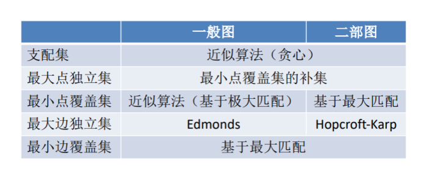

总览

算法课上的问题有两种：
- Order 涉及到序列的问题
- Graph 可以建模为图的问题
常见的策略主要有两种：
Traversal: 即可以理解为穷举，对每种情况都进行考虑;
Order: Brute Force, 暴力遍历，如排序，选择，查找等问题
Graph: DFS和BFS
Optimization: 使用某些优化策略
Order: Divide & Conquer
Graph: Greedy & Dynamic Programming
对Computer和Computing的理解
Computer的强大之处在于能够高效地计算简单、程序式的工作
Computing 就三步：
- encoding to 0,1
- operations
- decoding the '1's and '0's
Turning machine
Algorithm的理解
Algorithm is the spirit of computing.
注意是用来解决某个特定的问题
Essential issues:
Model of computation:
默认采用的就是RAM Model.
注意simple opreation，这里认为基本的存储、加减、乘除都是单位1， 而实际上加减和乘法的实现的时间并不一样
Algorithm design
分析问题、建模问题到具体的框架、解决问题、优化问题
正确性证明
例子：最小公约数证明——数学归纳法
输入、输出和结果类比证明
Algorithm analysis
Criteria, 关键操作，注意看定义的是什么

时间复杂度
最好、平均、最坏
空间复杂度
图涉及问题以及算法总结

一些好的例子
- Job scheduling
- Matrix chain multiplication